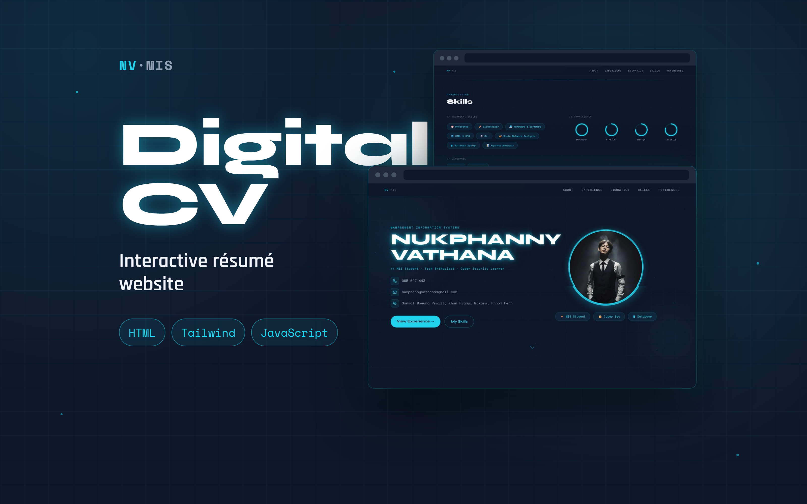

Case study 01
Digital CV Portfolio
Interactive Web Architecture & Frontend Engineering
An interactive digital CV application featuring fluid kinetic animations, custom theme transitions, zero external framework overhead, and client-side PDF document generation.
- 100%
- Vanilla web standards
- <1s
- First meaningful paint